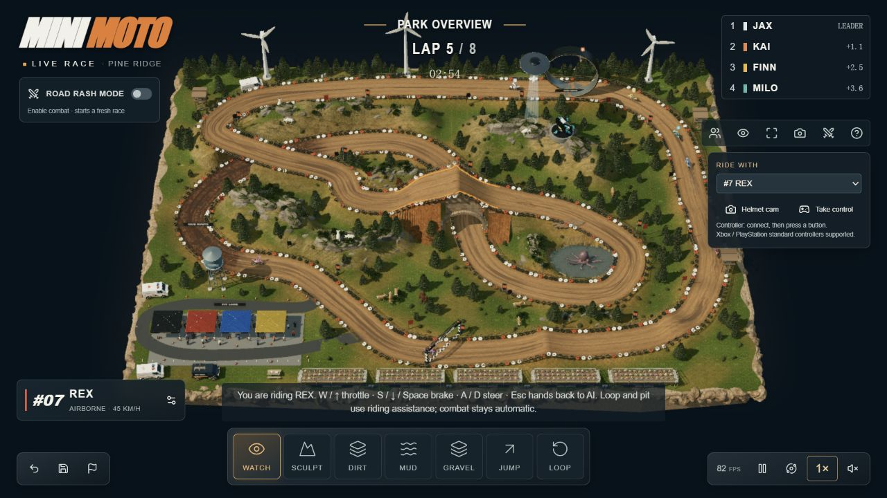
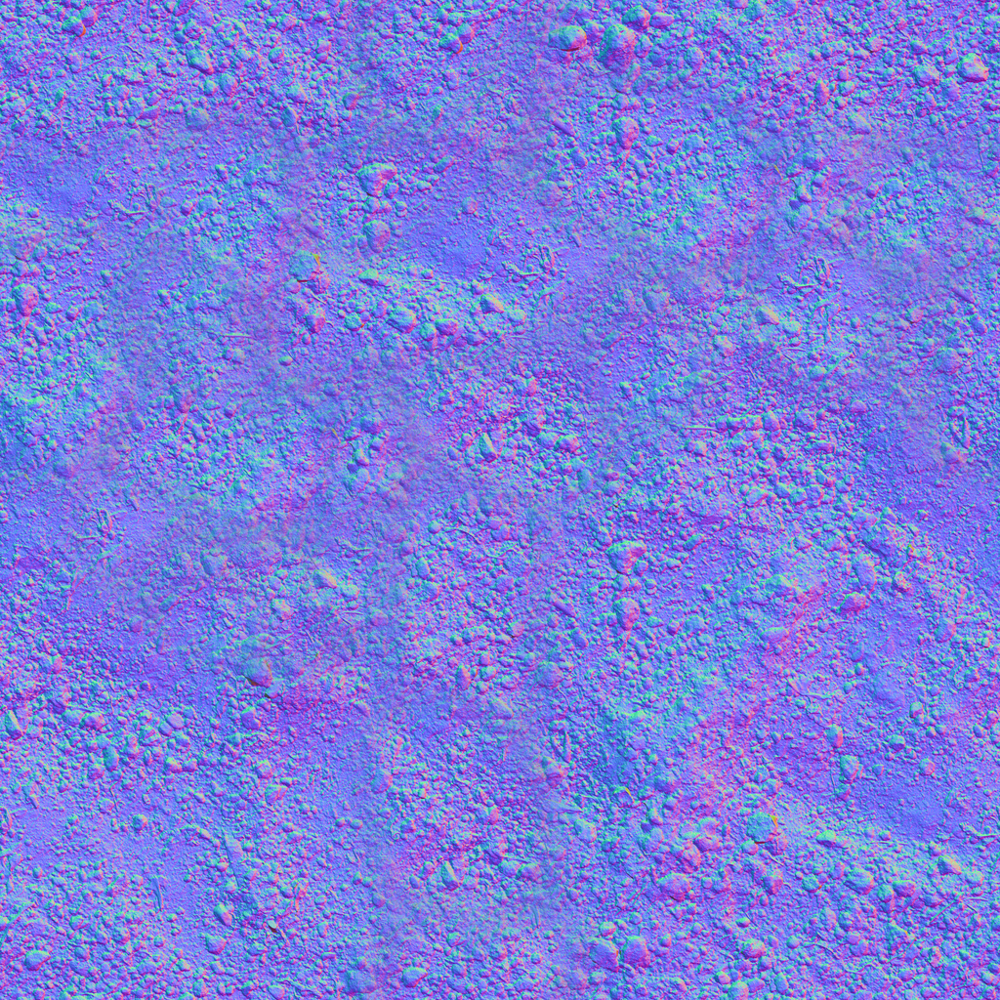

让赛道产生选择
地形、弯道、路面、护栏和镜头既影响画面，也影响路线和刹车点。
- 已验证
- 抬坡、路面和湿润改变简化运动；内外线形成不同成绩。
- 按需扩展
- 复杂地形、桥隧、素材、光影与性能。
改一处坡道，换一种路面，观察同一场比赛。
独立场景 · 道路辅助运动 · 非原作复刻
等待起跑
拖动全景改变观察角度 · 滚轮缩放
原作公开仓库和许可证待核实。
依据作者发布页面、公开脚本及 007 研究记录。
Mini Moto 是越野摩托竞速参考。核心在于把可玩的赛道空间，与摩托、骑手的表现和驾驶能力组合起来。基础原型已验证，后续围绕具体项目需求开发。
地形、弯道、路面、护栏和镜头既影响画面，也影响路线和刹车点。
摩托和骑手的外观、驾驶操作、能力取舍、姿态与声音共同塑造体验。
圈数、排名、检查点、失误与重赛，让驾驶过程可以反复挑战。
保留为赛车类游戏的参考和原型起点。场景表达、驾驶能力与竞赛反馈值得借鉴；当前没有证明独有算法、通用引擎能力或效率优势。
展示项目优化场景与镜头；交互项目补充操作和反馈；正式赛车游戏再建设物理、对手和内容。已有系统可持续优化，缺少的能力需要另行建设。
原作源码仓库和许可待核实。本页为独立简化演示，未复现完整车手能力或真实摩托物理。

赛道高低和路面参与行车决策，车辆状态再反馈到姿态、排名、镜头与声音。值得学习的是这些状态如何一致地工作；单独的曲线运动、贴图、雨丝或排名界面，并不是目前已确认的独有技术。
编辑、运动、观察与反馈形成连续的操作过程。
可访问网页不等于取得源码、模型和贴图授权。
本页新写赛道、摩托、比赛与场景；沿用 008 的研究思路和有来源的通用纹理，没有移植原作发布包。
| 能力 | 原作 Mini Moto | 008 观光车实践 | 本页 010 |
|---|---|---|---|
| 道路编辑 | 多种编辑入口；发布脚本重建几何及碰撞体 | 固定路段高程调整 | 局部抬坡、泥地/碎石切换，与车速联动 |
| 驾驶与比赛 | Rapier 世界、排名、8 圈完赛逻辑 | 双车巡游与跟车 | 四车 3 圈短赛、计时排名、自动/手动切换 |
| 车手差异 | 七项能力和固定点数；007 面板记录 | 三种驾驶策略 | 简化控弯参数；仅改变黄色车手 |
| 物理范围 | 作者说明轮胎接触、悬挂与辅助驾驶；精度未验收 | 道路约束与建筑前停车 | 道路约束、坡度/抓地限速与姿态表现；无刚体撞车或跳跃 |
| 素材与声音 | 加载 GLB、贴图和 Web Audio；许可待核实 | 独立几何及 CC0 纹理 | 独立几何、CC0 纹理、合成引擎声 |
| 天气 | 转述声称具备，完整机制待核实 | 湿润/抓地/雨丝联动 | 相同参数驱动抓地、材质、天空与雨丝 |
本页是虚构公园中的简化驾驶演示，不是实车标定模型。原作的“音轨编辑”、完整天气系统与单次提示完成等说法，证据不足。
以下解释本页实际采用的模型。
不是对原作源工程的还原。
闭合曲线按路程采样。抬坡同时改变路面、地表与车辆高度。
查看前方弯道，结合路面抓地与车手能力，计算目标速度。
每秒 60 次更新速度和路程；按过线时刻记录圈时、排名与完赛。
车轮、倾角、尘土、镜头和引擎声读取车辆状态，界面显示原因。
弯道速度上限随抓地能力的平方根变化；湿润降低抓地，车手更早制动。前方上坡也会触发保守控速，坡度另以重力分量改变加速度。
这是玩法近似，坡道系数为演示设定。单圈对照使用同一黄色车手、相同起点和固定时间步；不是实测赛车成绩。
道路、两轮摩托、车手、松林、围栏和维修区均为三维几何。颜色、法线与粗糙度纹理提供表面细节；阴影和雾建立尺度。



研究日期：2026-09-14。原作 commit/tag 与项目许可证待核实；本地验证范围与运行说明随研究文档保存。